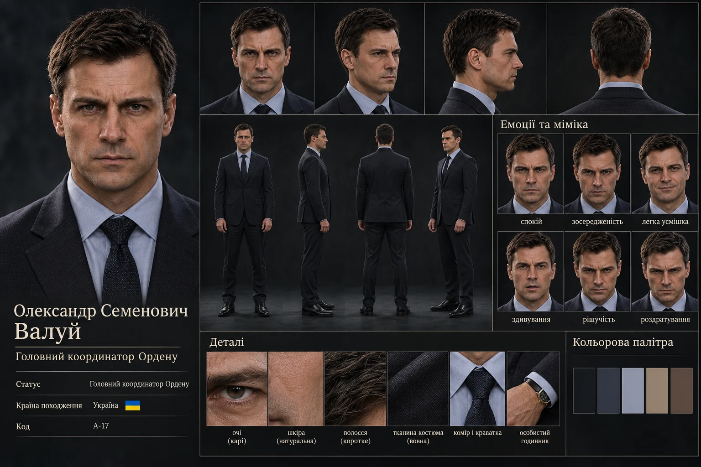

PROFILE
A man concealed by an ordinary life
Oleksandr Semenovych Valuy leads the Order’s activity in Ukraine. To outsiders, he appears to be the head of a medium-sized holding company. His ordinary, public life serves as a cover that attracts no suspicion.
ROLE IN THE ORDER
Chief coordinator in Ukraine
Valuy is a key figure in the Order’s Ukrainian network. His identity was established after analysts combined surveillance data and confirmed his links to the Order’s command channels.
EXPOSURE
Identifying his true role
Once Valuy was identified, the Ukrainian side gained a direct lead on one of its most dangerous opponents.